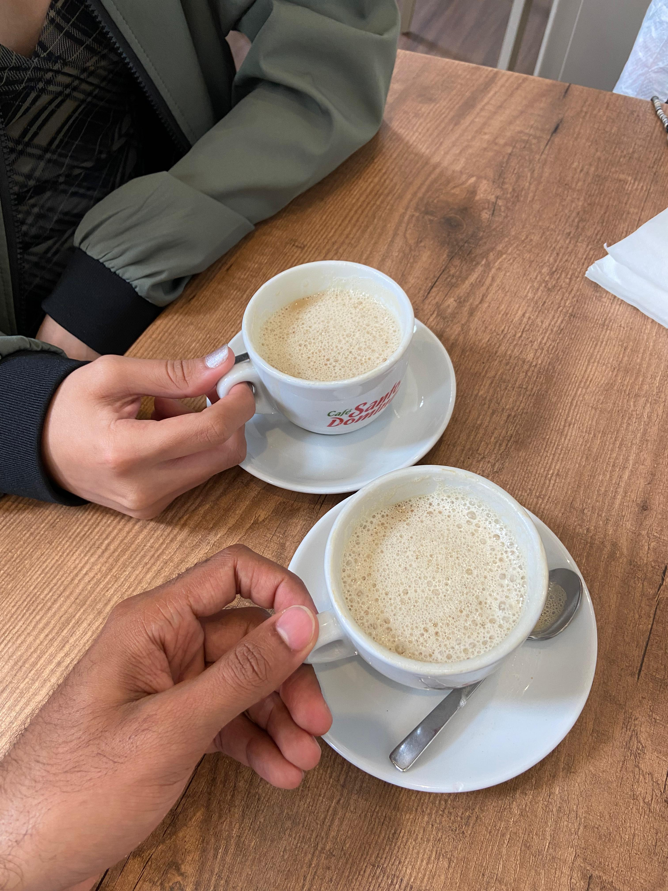
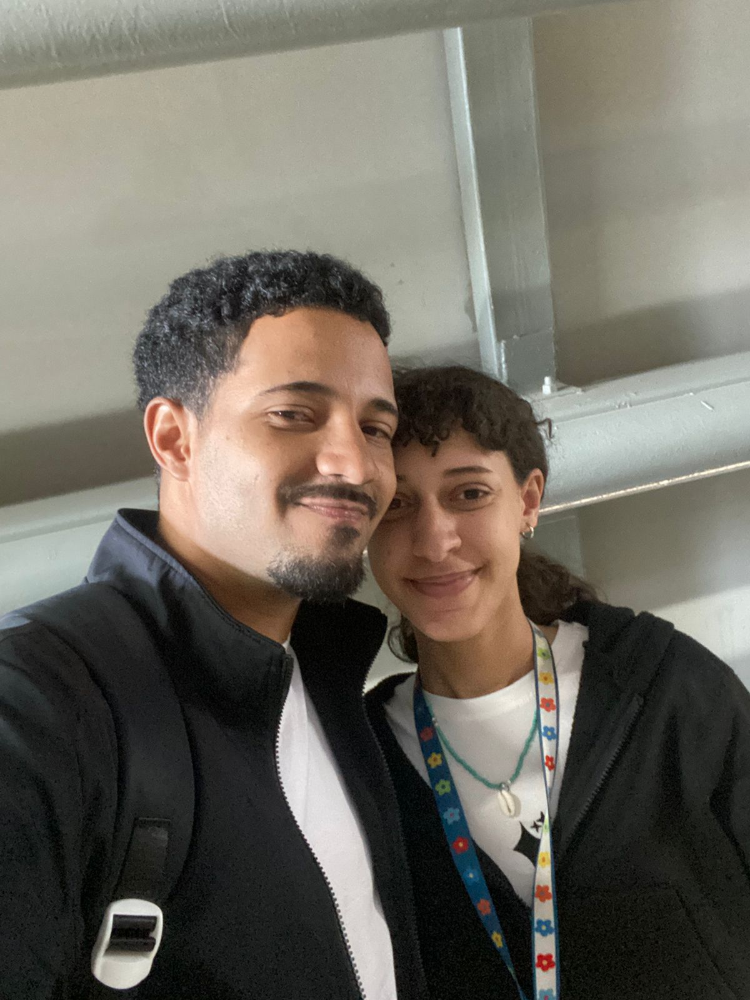
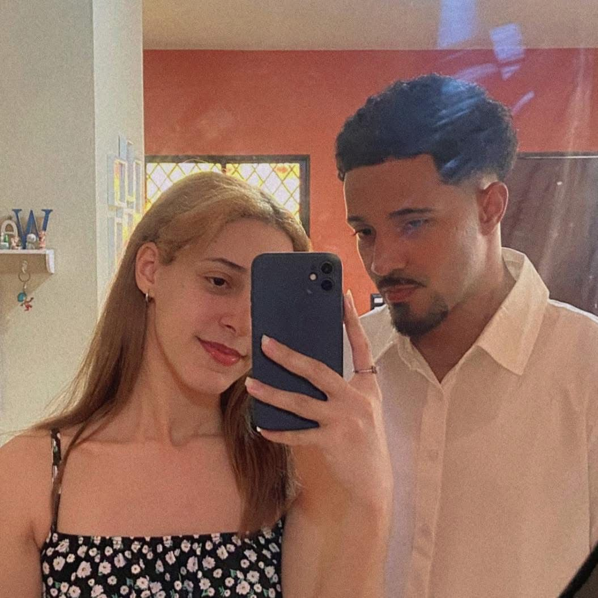
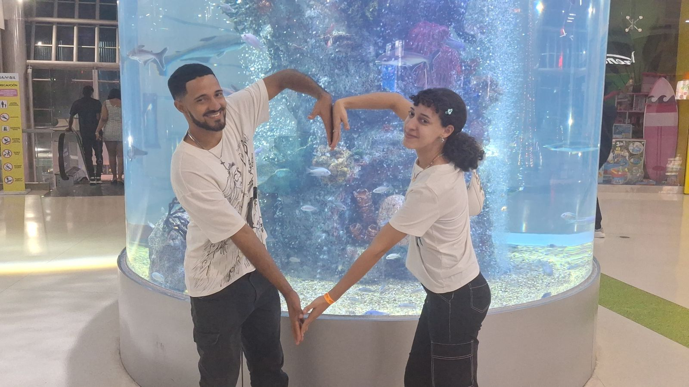

I · El principio

Continuar
Laura,
Hoy, pensando en todo lo que hemos vivido desde aquella tarde en la que me anime a saludarte. No puedo evitar sonreír.
Porque lo que empezó como una simple conexión espontanea, se convirtió en un lugar calido y acogedor para los dos.
Seis meses después, sigo eligiéndote. No por costumbre, sino porque en ti encontré algo real, algo que vale la pena cuidar todos los días. A pesar de la distancia, de los momentos difíciles o de lo incierto que pueda ser el futuro, lo único que tengo claro es que quiero seguir construyendo esto contigo.
Quiero más días contigo, más películas por discord, más llamadas, más besos y abrazos pendientes… más de nosotros. Amo pensar en nostoros.
II · Tenerte

Continuar
Tenerte en mi vida
Todos los días, al despertar, pienso en lo afortunado que soy de tenerte en mi vida. No solo por tu amor, sino por todo lo que estamos construyendo juntos, paso a paso. Contigo quiero ser mejor, no por obligación, sino porque me nace. Mejor persona, mejor hombre, mejor para ti. Eres una luz en mi vida… de esas que no encandilan, sino que guían. De esas que hacen que todo tenga más sentido. Eres como ese primer rayo de sol de la mañana, el que no avisa pero llega, y con solo estar ahí, hace que todo comience de nuevo.
III · TE AMO

Continuar
Te amo gordis ♥
Hoy quiero decirte que te amo, que te adoro y te anhelo. Nunca he tenido muchas cosas claras en mi vida como lo es amarte. Te amo por quién eres, te amo por lo que representas, te amo por tu dedicación, te amo por tu gentileza, te amo por tus emociones, te amo por tu vulnerabilidad, por tu fortaleza. Amo cada parte de ti y amo que compartas cada una de ellas conmigo. ♥
IV · Seis meses

Para siempre —
Seis meses a veces me parecen poco, hasta que recuerdo todo lo que hemos vivido para llegar hasta aquí. Cada cita, cada llamada, cada conversación, cada risa, cada emoción días antes y después de vernos. Quiero seguir sumando momentos y memorias contigo. Nuevas metas, nuevos planes, todo en lo que estés incluida tú. TE AMOOOOOOOOO mi cotita linda!
Att; Johnson Jerez
Futuro esposo y padre de tus hijos.